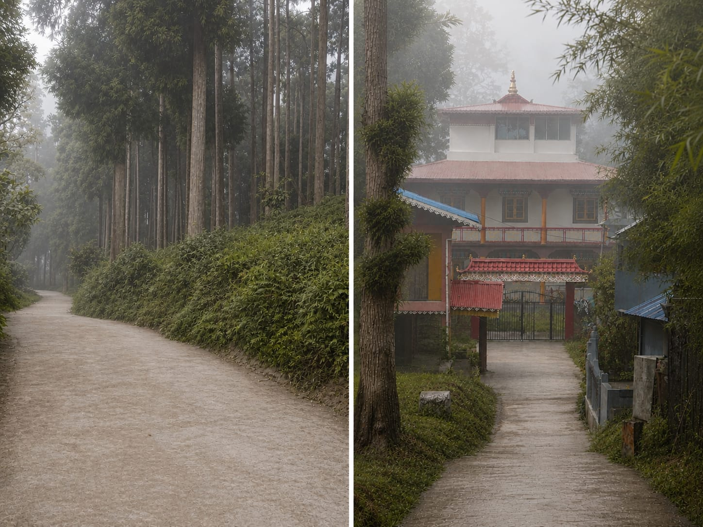
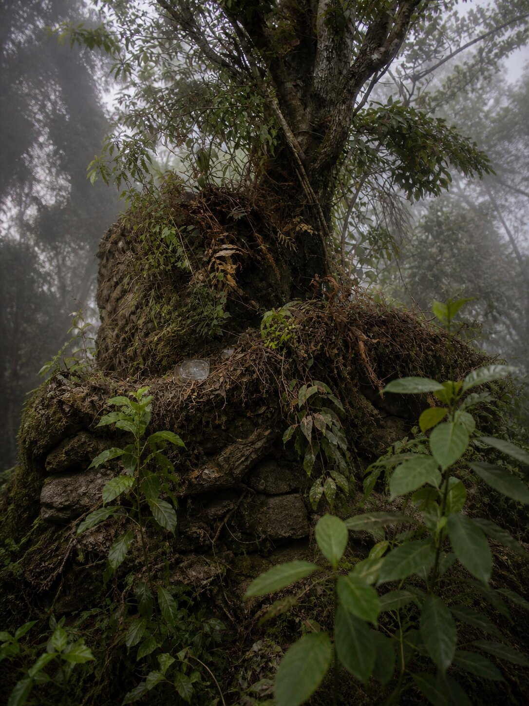

Location & Setting
The monastery is located in Ging, approximately 10 km from Darjeeling town along the Lebong route. From Lebong Cricket Bazar, the approach continues toward Phoobsering Tea Estate; a road then branches between the tea estate and the Ging Lama Hatta road, after which the upper Ging Lama Hatta road leads toward the monastery. The final stretch passes through patches of forest and pine, then opens onto the monastery grounds. The setting remains quiet and relatively secluded, in keeping with traditional monastic preferences.

The approach toward Sangchen Thongdrol Ling through pine-covered roads and the final pathway leading into the monastery grounds.
Oral Traditions & Folklore
The accounts below are part of local oral tradition and community memory. They are presented as folklore and are not verified historical records.
A persistent local belief describes a guardian spirit—sometimes referred to as a headless rider—watching over the monastery grounds. Nearby, the remains of an old stupa and a tree growing from it are said to be associated with this presence. Such narratives have long shaped how the community relates to the sacred landscape.

Remains of an old stupa near the monastery, with a tree growing from its structure. In local belief, this site is associated with a guardian presence connected to the monastery.